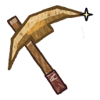
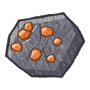
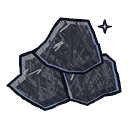
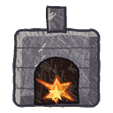
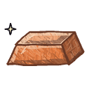

Crafting for Pale Blue Dot: what a dig gives you, where you take it, what it becomes, and how it ends up as a ship. Everything here is a design to argue with. The game has no crafting today; the pack has a Crafting non-goal in inventory-grid, and this is the change that would pick it up.
About the art. Every icon on this page is painted by code (tools/art/crafting_art.py) with the hand-drawn-illustration crayon kit, copying the owner's friend's marker style stroke by stroke: flat block, hatching in the shape's own tones, form crescents, highlight dabs, an edge in a deep tone of the same hue. Nobody drew these by hand, and they are placeholders for the friend's own drawings if wanted. The recipe numbers are first guesses, chosen to be easy to change.
Crafting starts where dig-and-place and inventory-grid already end. A dig removes a cell and drops its material as a floating hex prism, the magnet pulls it in, and the give order puts it in the hotbar or the pack. Crafting adds two steps after that, and one rule before it: what tool you hold decides what a dig can take.

DigHold a pick, break a cell. Ore needs the right tier of pick (section 5).dig-and-place
DropThe cell floats as a 0.16 m prism for 300 s of world time. Saved with the dig's log line.inventory-grid, decision 4
CarryHotbar first, then the 30-slot pack. Ore stacks to 99, a tool to 1.inventory-grid, decision 2
StationPress E at a placed station. Its panel opens beside the pack, over the running world.new: this change
MakeA recipe takes from the pack and gives back by the same give order. One log line per craft.new: this changeFive tiers, each gated by what you can already make. A tier is a material's place in the chain, not a rarity roll. Tier 0 comes off the ground by hand or with any tool; ore needs a pick at or above its tier.
| Tier | Gather with | Raw | Worked into | Station |
|---|
Each body's materials are explicit planet data, as life and biome rosters already are (CLAUDE.md: no accidental fallback across planets). A material only spawns where its body's roster names it, so the reason to fly somewhere is something you cannot dig at home. Living materials only come from bodies with life; airless worlds give minerals only.
A station is something you build and place, like a lantern: a block in the world, saved through the same edit path, with its own panel. Each one is the gate to a tier. Stations that burn fuel are lights at night, the way a forge is in towns.html.
Every recipe on one sheet, raw on the left and ship modules on the right. Hover or tab to a node to light up what it needs and what it feeds. The last column is where crafting hands over to the ship builder.
A working mock. The pack (three rows of ten) and the hotbar are the inventory-grid and hotbar-and-game-hud designs as built: bordered squares, the block's side as its picture, a count when over one, the selected slot lifted. The station's panel sits to their left. Pick a recipe, press Craft: the ingredients leave the pack, the job waits its time in the queue, and the result lands by the give order (matching stacks in the hotbar, then the hotbar's first empty slot, then the pack's).
I pack E use station 1-0 hotbar Esc close. Shift-click a recipe in game to craft as many as the pack allows.
Four picks. A pick's tier sets what it can break and how fast; the break time is Tenebris's shape (mining::break_time, which dig-and-place left out): the cell's hardness over the tool's speed. A pick below a cell's tier cannot take it: the cell cracks and says which pick it wants. There is no random quality roll: the same recipe always makes the same tool, so two players' tools agree, and a multiplayer server has one rule to check.
| Cell | Hardness | Tier | Stone pick | Bronze pick | Iron pick | Steel pick |
|---|
Break time = hardness / speed, in seconds; a dash means the pick is below the cell's tier. Speeds 1.0, 1.6, 2.4, 3.6; hardness from Tenebris's table, ore added.
A craft is a world change and takes the durable path the moment it is accepted: one log line naming the station, the recipe and the forty slots after it, the same shape as a dig's line. A queued job is a stored record on its station; it advances only while the world is played.
The ground today has one Ore material. Copper, tin and iron veins are a change to generation, so they arrive as a new generator version for new worlds. An existing world keeps its Ore cell for cell, and the forge reads it as mixed ore, smelted to copper, tin or iron by a fixed recipe. Nothing a player dug is lost or reset.
Recipes live in assets/config/recipes.ron with units and one source of defaults. Changing a recipe never touches an item already made, and an item whose recipe is removed stays in the pack and still works.
Recommendations are mine, not the owner's words. Per the survey rule, only the questions with something to look at here would go to the survey; the rest can be taken as recommended.